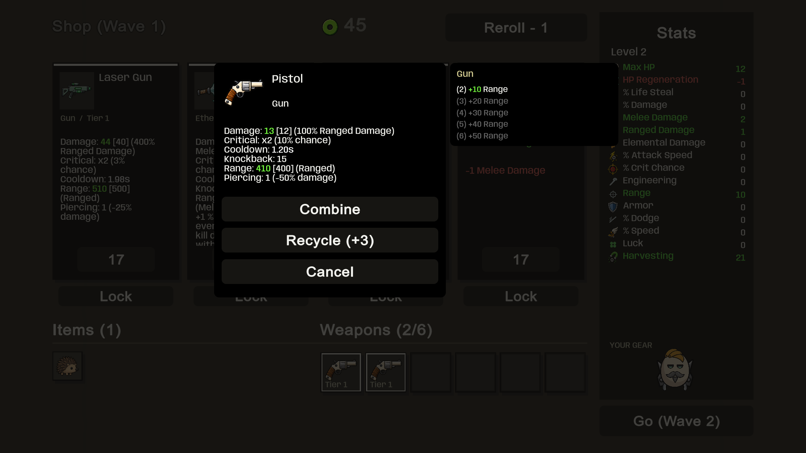
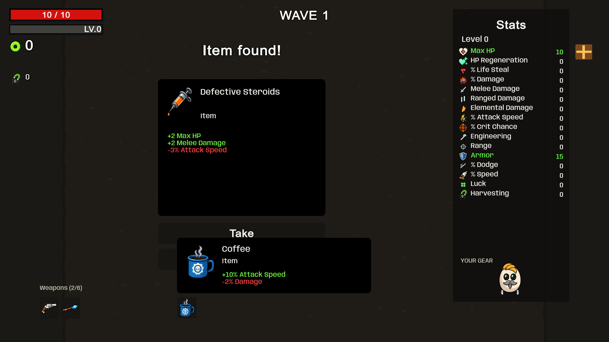
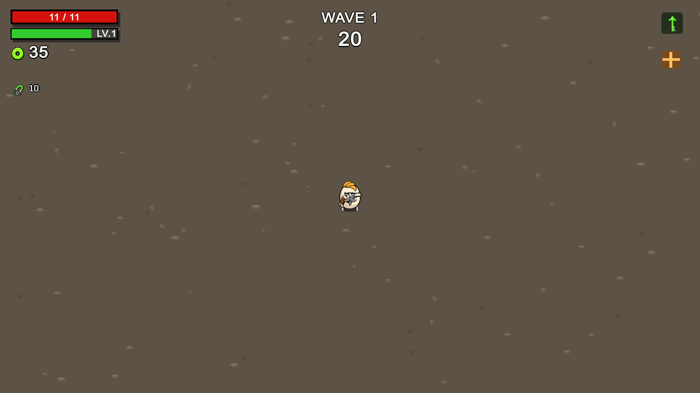
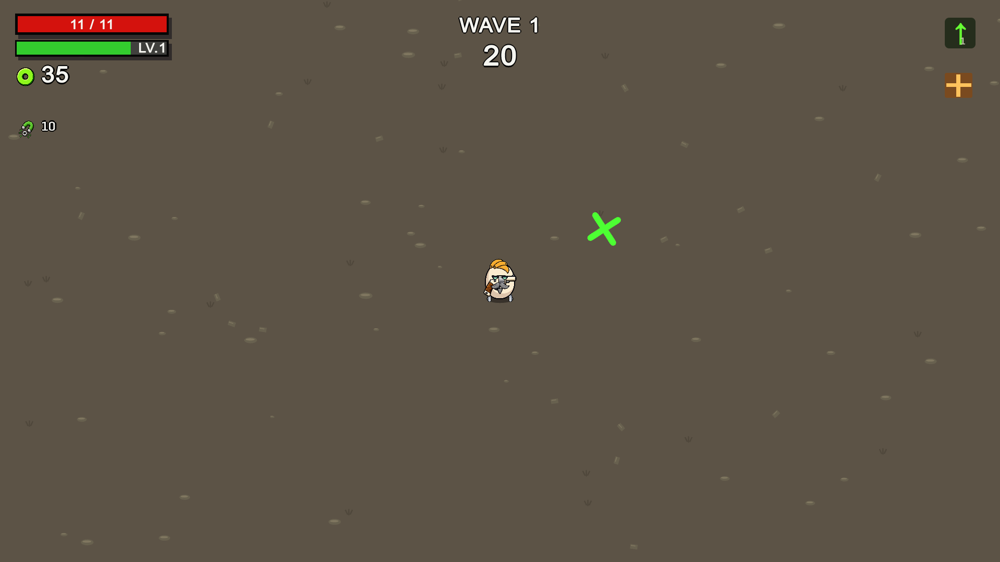
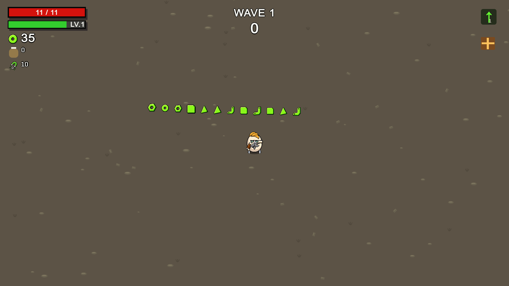
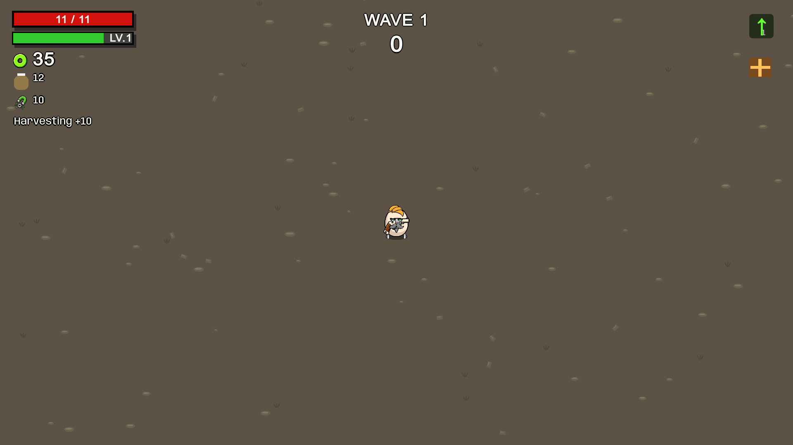
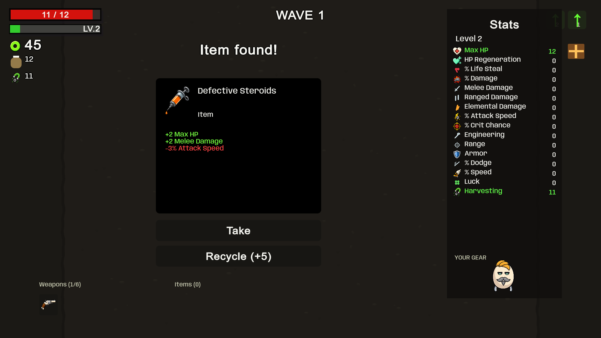

Run feedback and reward UI
Staged screenshots from the built player. Source comparison and limitations are recorded in docs/run-feedback-and-rewards.md.
Weapon actions: Combine, Recycle, Cancel

Crate reward and Take/Recycle

Pending levels and crates

Green tree spawn warning

Materials move toward stored reserves

Harvesting feedback

Crates before level upgrades
